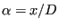
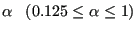
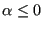

Next: Pump Up: Fluid Section Types: Liquids Previous: Pipe, Bend Contents
A gate valve (Figure 118) is characterized by head
losses
 of the form:
of the form:
 |
(190) |
where  is a head loss coefficient depending on the ratio
is a head loss coefficient depending on the ratio
 is the mass flow, g is the gravity acceleration and
is the mass flow, g is the gravity acceleration and  is the
liquid density.
is the
liquid density.  is the cross section of the pipe,
is the cross section of the pipe,  is a size for the
remaining opening (Figure 118) and is the diameter of the pipe.
Values for
is a size for the
remaining opening (Figure 118) and is the diameter of the pipe.
Values for  can be found in file “liquidpipe.f”.
can be found in file “liquidpipe.f”.
The following constants have to be specified on the line beneath the *FLUID SECTION, TYPE=PIPE GATE VALVE card (internal element label: DLIPIGV):

The gravity acceleration must be specified by a gravity type
*DLOAD card defined for the elements at stake. The material
characteristic  can be defined by a
*DENSITY
card.
can be defined by a
*DENSITY
card.
For the gate valve the inverse problem can be solved too. If the user defines
a value for
 is being solved for. In that case the
mass flow must be defined as boundary condition. Thus, the user can calculate
the extent to which the valve must be closed to obtain a predefined mass
flow. Test example pipe2.inp illustrates this feature.
is being solved for. In that case the
mass flow must be defined as boundary condition. Thus, the user can calculate
the extent to which the valve must be closed to obtain a predefined mass
flow. Test example pipe2.inp illustrates this feature.
Example files: pipe2, pipe, piperestrictor.